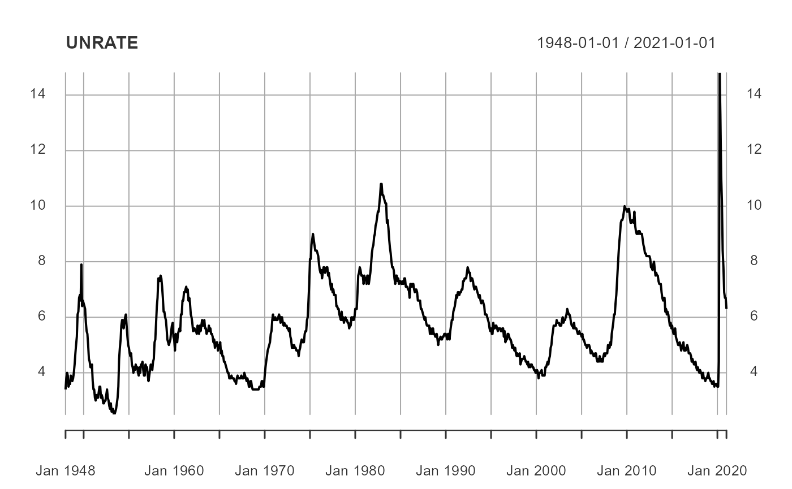
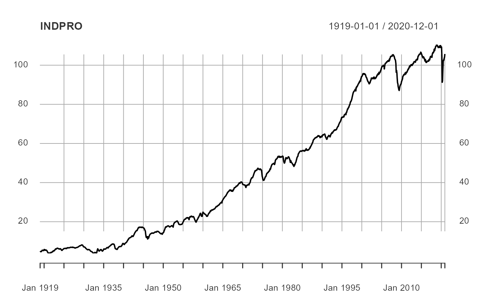
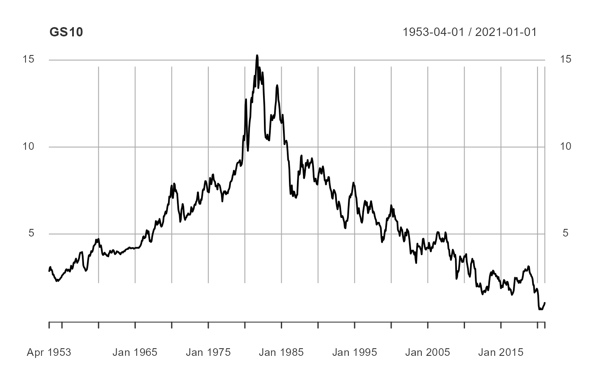
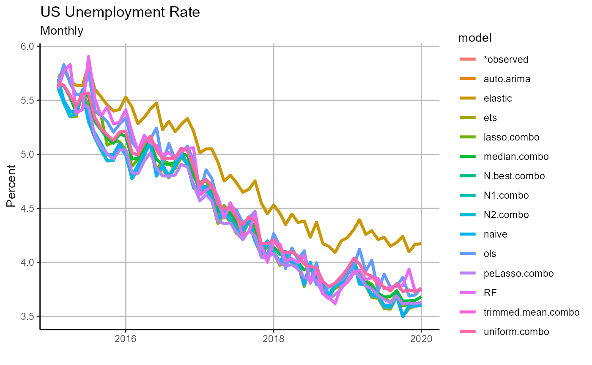

getting_started.RmdIn this simple vignette, we will get started with a simple forecasting example of interest to many people, the unemployment rate of the United States. We will proceed by 1) downloading economic data from FRED, 2) creating a collection of univariate and multivariate forecasts, 3) combining all our forecasts to create new, and hopefully more accurate, forecasts, 4) evaluate our forecast errors and, 5) visualize our most promising forecasts.
Disclaimer: this writing is meant to be a simple example highlighting the workflow of the OOS package. That being said, the US macroeconomy is an erdogic system, a fact that is ignored for this analysis. As a result, there are several important steps to the time series analysis ignored and this should not be taken as advice on how to forecast the US unemployment rate for any type of actionable decision making.
For the purposes of this vignette, we will load the general purpose tidyverse for data cleaning and the OOS package for forecasting. However, note that OOS does not require tidyverse be loaded globally, this is purely for the ease of exposition.
# load packages
suppressPackageStartupMessages(library(tidyverse))
suppressPackageStartupMessages(library(lubridate))
library(OOS)As we are are seeking to forecast the unemployment rate, we will obviously need to beging by acquiring the time series data. Moreover, as we will be taking advantage of multivariate techniques, we will also look towards aquiring related economic time series, namely industrial production (as a monthly proxy for output), and the 10-year constant maturity Treasury yield (as a proxy for interest rates).
For our data we will turn to FRED (a repository of global economic data, currated by the Federal Reserve Bank of St. Louis).
# pull data
quantmod::getSymbols.FRED(
c('UNRATE','INDPRO','GS10'),
env = globalenv())## Registered S3 method overwritten by 'quantmod':
## method from
## as.zoo.data.frame zoo## [1] "UNRATE" "INDPRO" "GS10"
# format data
Data = cbind(UNRATE, INDPRO, GS10)
Data = data.frame(Data, date = zoo::index(Data))One will note that once we downloaded the data from FRED, we additionally combine all of the series into a data.frame with a column named date. We do this because OOS forecasting routines can accept two general data formats.
ts, xts, or zoo objectsThen, before we move on to the fun part, we will inspect our new data.
# basic plot of the unemployment time series
plot(UNRATE)
# basic plot of the industrial production time series
plot(INDPRO)
# basic plot of the 10-year Treasury yield time series
plot(GS10)
Upon inspection it becomes clear that industrial production and the 10-year Treasury yield are trending series (i.e. they are non-stationary). And yes, there are formal tests we could conduct to test this hypothesis, as well as with the unemployment rate, but for the purposes of this example we will take their trends, or lack thereof, as given. We will transform the industrial production to a year-over-year percent growth rate and the 10-year Treasury yield to a month-over-month percentage point change.
# make industrial production and 10-year Treasury stationary
Data = Data %>%
mutate(GS10 = GS10 - dplyr::lag(GS10),
INDPRO = (INDPRO - lag(INDPRO, 12))/lag(INDPRO, 12))
# start data when all three variables are available
# (this is not necessary, but it will suppress warnings for us)
Data = filter(Data, date >= as.Date('1954-01-01'))We will first forecast using a collection of univariate time series. As we have chosen to forecast a very clean series, we will not make use of OOS’s ability to clean outliers and impute missing values in a real-time fashion. That is, we only need to focus on the bare bone requirements of OOS’s univariate forecasting routine, forecast_univariate:
ts, xts, or zoo time series object, or a two column data.frame with a date column and the time series to forecastFor our demonstration, we will simulate forecasts of the unemployment rate one month into the future, using a random walk, ARIMA, and exponential smoothing, over a five year period from 2015 through 2019.
# run univariate forecasts
forecast.uni =
forecast_univariate(
# forecasting data
Data = dplyr::select(Data, date, UNRATE),
forecast.dates =
seq.Date(from = as.Date('2015-01-01'),
to = as.Date('2019-12-01-01'),
by = 'month'),
# forecast method and type
method = c('naive','auto.arima', 'ets'),
horizon = 1,
recursive = FALSE,
# information set treatment
rolling.window = NA,
freq = 'month')## <warning: univariate.forecast.training was instantiated and default values will be used for model estimation.>One may notice that after running forecast_univariate we received the warning:
<warning: univariate.forecast.training was instantiated and default values will be used for model estimation.>This warns us that we are using default parameters when training the random walk, ARIMA, and exponential smoothing models. More on this topic, including how a user may change the training parameters as they would like, will be covered in a separate vignette - as such, this type of warning will be suppressed for the remainder of the exercise. We next examine our output.
# view top of forecast output
head(forecast.uni)## model forecast se forecast.date date
## 1 naive 5.700000 0.1917706 2015-01-01 2015-02-01
## 2 auto.arima 5.653460 0.1796099 2015-01-01 2015-02-01
## 3 ets 5.653691 0.1790950 2015-01-01 2015-02-01
## 4 naive 5.500000 0.1917821 2015-02-01 2015-03-01
## 5 auto.arima 5.474782 0.1795762 2015-02-01 2015-03-01
## 6 ets 5.477820 0.1790102 2015-02-01 2015-03-01As one can see, we now have five years worth of one-month ahead forecasts for the US unemployment rate! The default output for OOS forecasting routines, forecast_univariate, forecast_multivariate, and forecast_combination, is a long form matrix with the columns:
Note that when forecasts are generated recursively for a horizon greater than one, all forecasts between forecast.date and date will be provided in the forecast output as well as the declared horizon.
Having successfully created a pool of univariate forecasts, we next turn to a collection of multivariate forecasting models. While there are several similarities in univariate and multivariate forecasting in OOS, one will will note that there are four differences between key forecast_univariate and forecast_multivariate.
forecast_multivariate requires one to declare the name of the variable to be forecasted.forecast_multivariate allows the user to create an arbitrary number of lags for a chosen set (although the default is all) of variables in the design matrix.forecast_univariate allows the user to use direct projections or recursive forecasting while forecast_multivariate only allows for direct projections (this may change in a future version of OOS).forecast_multivariate allows users to perform dimension reduction on a chosen set (although the default is all) of variables in the design matrix, via principal components.With these differences in mind, we will jump right into our multivariate forecasting with forecast_multivariate.
# create multivariate forecasts
forecast.multi =
forecast_multivariate(
Data = Data,
forecast.date =
seq.Date(from = as.Date('2015-01-01'),
to = as.Date('2019-12-01'),
by = 'month'),
target = 'UNRATE',
# forecast method and type
horizon = 1,
method = c('ols','elastic','RF'),
# information set treatment
rolling.window = NA,
freq = 'month',
lag.n = 1)
# view top of forecast output
head(forecast.multi)## date forecast.date model forecast se
## 1 2015-02-01 2015-01-01 ols 5.697031 0.03688140
## 2 2015-02-01 2015-01-01 elastic 5.699710 NA
## 3 2015-02-01 2015-01-01 RF 5.541870 NA
## 4 2015-03-01 2015-02-01 ols 5.958763 0.04550295
## 5 2015-03-01 2015-02-01 elastic 5.945148 NA
## 6 2015-03-01 2015-02-01 RF 5.550913 NAAnd it appears that we again have been successful in forecasting the US unemployment rate!
It is no secret that while one forecast can be good, several forecasts can be great. we next turn to combining forecasts through a series of (out-of-sample) forecast combination techniques using the OOS forecast_combine function.
To create a set of forecast combinations, we will first need to merge our existing forecasts into one data.frame. Additionally, as we will use combination methods that require minimizing a loss function, we will also merge in the true data realizations - although this is not necessary when a user relies on methods that do not need to learn (e.g. uniform weights or the forecast median).
# combine forecasts and add in observed values
forecasts =
dplyr::bind_rows(
forecast.uni,
forecast.multi) %>%
dplyr::left_join(
dplyr::select(Data, date, observed = UNRATE),
by = 'date')Now that we have our forecasts all in one neat package, we may turn to creating forecast combinations.
Two things that a user may wish to note regarding the forecast_combine function are:
forecast_combine is designed to specifically take in output from forecast_univariate and forecast_multivariate, however, if as long as a user has their data formatted in the same long-form style as the OOS forecasting functions, they can use forecast_combine.Bearing these notes in mind, we will use a collection of naive methods, uniform weights, the median forecast, and a winsorized mean, as well as a collection of trained combination models, n.best, LASSO, and peLASSO, with a burn in of 5 observations to combine our univariate and multivariate based forecasts.
# forecast combinations
forecast.combo =
forecast_combine(
forecasts,
method = c('uniform','median','trimmed.mean',
'n.best','lasso','peLasso'),
burn.in = 5,
n.max = 2)
# merge forecast combinations back into forecasts
# (these will be used later)
forecasts =
forecasts %>%
dplyr::bind_rows(forecast.combo)
# view top of forecast output
head(forecast.combo)## date forecast model se
## 1 2015-02-01 5.657627 uniform NA
## 2 2015-03-01 5.651238 uniform NA
## 3 2015-04-01 5.528927 uniform NA
## 4 2015-05-01 5.474600 uniform NA
## 5 2015-06-01 5.547554 uniform NA
## 6 2015-07-01 5.504483 uniform NAWe have forecast combinations for the US unemployment rate! This is nice progress, but now that we have all of these forecasts, how do we know which ones are good and which ones we should use to make decisions?
For that we next turn to OOS’s suite of forecast evaluation metrics.
Now that we have a collection of forecasts, we would like to know which ones to use. OOS has two ways to evaluate forecasts, error analysis and visualization.
First, we can calculate various loss functions for each model found in a long-form data.frame in the same style as forecast_univariate, forecast_multivariate, and forecast_combine output.
# calculate forecast errors
forecast.error = forecast_accuracy(forecasts)
# view forecast errors from least to greatest
# (best forecast to worst forecast method)
forecast.error %>%
dplyr::mutate_at(vars(-model), round, 3) %>%
dplyr::arrange(MSE)## # A tibble: 14 x 5
## model MSE RMSE MAE MAPE
## <chr> <dbl> <dbl> <dbl> <dbl>
## 1 N.best 0.009 0.092 0.074 0.017
## 2 N1 0.009 0.096 0.075 0.017
## 3 N2 0.009 0.097 0.08 0.018
## 4 RF 0.01 0.101 0.078 0.018
## 5 peLasso 0.012 0.11 0.092 0.021
## 6 lasso 0.014 0.12 0.083 0.019
## 7 median 0.014 0.12 0.095 0.022
## 8 auto.arima 0.016 0.128 0.107 0.024
## 9 ets 0.016 0.128 0.107 0.024
## 10 naive 0.016 0.126 0.103 0.024
## 11 trimmed.mean 0.023 0.153 0.126 0.029
## 12 uniform 0.023 0.153 0.126 0.029
## 13 ols 0.091 0.301 0.253 0.059
## 14 elastic 0.098 0.313 0.265 0.062Through comparing errors we can see that the N-best forecast combination outperformed the rest of the pack, while the random forest was the best performing single forecast, and the simple ARIMA and ETS models outperform all other multivariate methods. Moreover, we can additionally comparing forecasts in statistical tests or error ratios. Here we see how all of our forecasts compare to a baseline random walk, where an error ratio smaller than one signals that a forecast method has a smaller error (that is, does better) than the random walk.
# compare forecasts to the baseline (a random walk)
forecast_comparison(
forecasts,
baseline.forecast = 'naive',
test = 'ER',
loss = 'MSE') %>%
arrange(error.ratio) %>%
dplyr::mutate_at(vars(-model), round, 3)## model error.ratio
## 1 N.best 0.534
## 2 N1 0.580
## 3 N2 0.590
## 4 RF 0.639
## 5 peLasso 0.775
## 6 median 0.893
## 7 lasso 0.919
## 8 naive 1.000
## 9 ets 1.021
## 10 auto.arima 1.022
## 11 trimmed.mean 1.461
## 12 uniform 1.461
## 13 ols 5.661
## 14 elastic 6.136Then, after comparing forecasts based on errors, we can visualize our output.
Lamentably, current OOS charting capabilities are somewhat limited, but this will change in future versions of the package. For now, we will focus our attention on our forecasts themselves.
# chart forecasts
chart =
forecast_chart(
forecasts,
Title = 'US Unemployment Rate',
Ylab = 'Percent',
Freq = 'Monthly')
chart
During our brief walk through the basic OOS workflow, we have successfully created out-of-sample forecasts for the US unemployment rate over a five year period using univariate, multivariate, and ensemble methods. Then we were able to compare these methods and discern that while forecast combinations were on whole the best performing class of forecasts, the simple ARIMA, ETS, and random walk all did very well in comparison to the pool of multivariate models (save the random forest).
Through this exercise we have demonstrated just how easy OOS makes it to test times series forecasting methods in pseudo-real time. However, this walk through only touches on the surface level capabilities of OOS, please see additional articles and vignettes for a deeper dive into user-defined forecasting methods, additional possible output, and real-time dimension reduction techniques, among other topics.